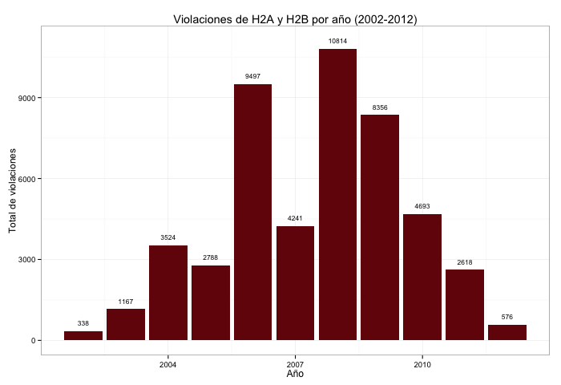

"Llegó una persona a nuestro pueblito, una persona extraña para los habitantes de nuestra comunidad, que venía a ofrecerles trabajar en los Estados Unidos con visa de trabajo." — testimonio recogido de Chilapa de Álvarez, Guerrero
La ausencia de un acuerdo bilateral entre el gobierno de Estados Unidos y el de México ha ocasionado que los derechos de los trabajadores sean vulnerados y se produzcan graves violaciones a sus derechos humanos.
La falta de regulación de las agencias reclutadoras y de contratación de migrantes para empleos temporales en Estados Unidos (EU) por parte del gobierno mexicano, propicia la violación a los derechos humanos y laborales de las trabajadoras mexicanas migrantes. Fraude, amenazas, extorsión, discriminación, trata de personas, acoso y hostigamiento sexual son algunos de los riesgos a los que se enfrentan.
| Estado | Contratos |
|---|---|
| Colorado | 26 |
| North Carolina | 16 |
| Texas | 14 |
| New Jersey | 12 |
| California | 10 |
| Louisiana | 10 |
| Pennsylvania | 10 |
Cada año, miles de trabajadoras y trabajadores mexicanos viajan a los Estados Unidos a través del sistema de visas H-2A (para emplearse en el sector agrícola) y H-2B (para emplearse en el sector servicios: construcción, trabajo del hogar y servicios de limpieza).
En México no existe un seguimiento de éste proceso. Conoce a los reclutadores que operan de manera ilegal y que han sido identificados por la Coalición de Trabajadoras y Trabajadores Temporales Sinaloenses.
En Estados Unidos existe la obligación, por parte de los empleadores, de entregar un recibo a los trabajadores en los que se registran las horas que han trabajado, este registro en la realidad no es otorgado y, por el contrario los trabajadores son despojados de los ingresos que les corresponderían por el tiempo y la actividad que realizan.
"Se gasta más de lo que uno gana, y solo alcanza para cubrir las deudas que ocasiona y nada para enviar a la familia. Estando en otro país pasan muchas cosas por la mente pero uno solo se refugia en el deseo de juntar algo para mandarlo a la familia." — testimonio recogido en Atlixtac, Guerrero
El tipo de labores que realizan los trabajadores migrantes temporales propicia que los accidentes de trabajo sean comunes. Existe la obligación para los empleadores de otorgar un seguro que cubra el tratamiento médico y los salarios perdidos de los trabajadores que se hayan accidentado en el trabajo o sufran de una enfermedad ocupacional. Sin embargo, las reglamentaciones no se cumplen, los trabajadores no reciben asistencia médica y son retornados a su país sin que tengan la posibilidad de denunciar la violación a sus derechos laborales.
Acompañados por el Proyecto de Derechos Económicos Sociales y Culturales, trabajadores migrantes temporales iniciaron en 2012 un proceso de documentación de violaciones de sus derechos humanos laborales. En octubre de 2013 conformaron la Coalición de Trabajadoras y Trabajadores Temporales Sinaloenses con el objetivo de dar un primer paso para mejorar los mecanismos de vigilancia y protección de sus derechos, en particular durante su proceso de reclutamiento.
Los trabajadores, habitantes de Topolobampo, municipio de Ahome, Sinaloa hasta ahora han identificado dos reclutadores que han cometido fraude en contra de los trabajadores temporales: Humberto Salinas Cepeda y "el Machurro". Humberto Salinas, de acuerdo con la Coalición, defraudó a 36 personas, mientras que "el Machurro" lo hizo con 10.
El 31 de marzo de 2014, 15 trabajadores temporales denunciaron penalmente al reclutador Humberto Cepeda. Con la presentación de la denuncia los trabajadores buscan dar un paso en contra de la impunidad con la que los reclutadores operan.
Para más información:
| Organización | Sitio | Correo |
|---|---|---|
| Proyecto de Derechos Económicos Sociales y Culturales | prodesc.org.mx | prodesc@prodesc.org.mx |
| Coalición de Trabajadoras y Trabajadores Temporales Sinaloenses | coalicionsinaloense@gmail.com | |
| Centro de los Derechos del Migrante | cdmigrante.org | skarp@cdmigrante.org |
| National Guestworkers Alliance | globalworkers.org | |
| Global Worker Justice Alliance | globalworkers.org | catheleen@globalworkers.org |
Este sitio fue producido por Adriana Aguilar, Dan Hill, Christian Solis y Maria Ines Zamudio.
Un proyecto de Migrahack DF.